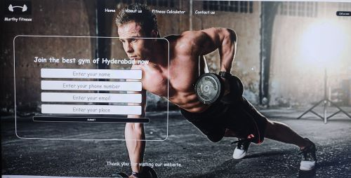

Project 1
Gym website
Using only HTML and CSS
This was my first try for a website and it is made of only HTML and CSS. It is a website which has a form and a great background.
I am a freshman studying Electrical and Electronics Engineering at BITS Pilani, K K Birla Goa Campus. I am from Hyderabad, Telengana. I am passionate about building websites and like to play cricket :)
This was my first try for a website and it is made of only HTML and CSS. It is a website which has a form and a great background.
This was my second try for a website and it is made of only HTML and CSS. It is a website which has different options and a great background.
This was my third try for a website and it is made of only HTML and CSS. It is a website which uses tailwind css.
Learnt/Learning
I am a budding web development enthusiast. I have worked on a few peronal projects. I am learning HTML, CSS and Node.js.
I am a budding photo editing enthusiast. I have worked on a few peronal projects. I am learning photoshop.
I am fond of learning new programming languages and am currently learning C as a part of my academic requirement.
I am an enthusiast in learning new programming languages. I am learning C++ as part of my projects.
I am an enthusiast in learning new programming languages. I am learning python as part of my projects.